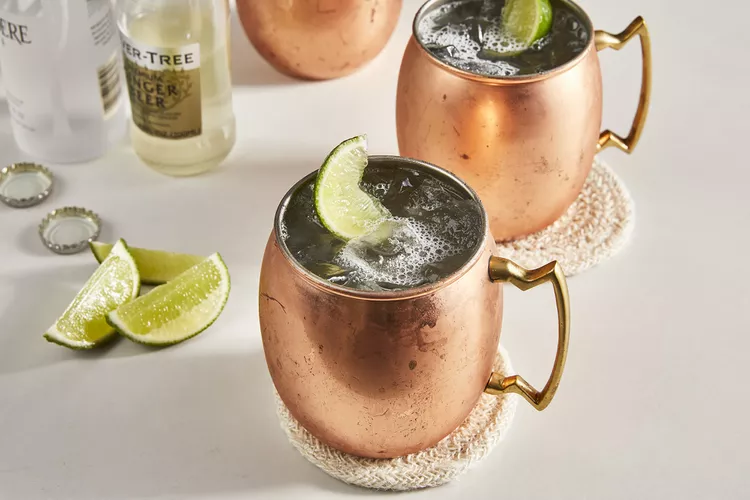

Home | World's Best Lasagna | Whipped Vodka Lemonade
Moscow Mule Cocktail

This classic Moscow mule recipe uses vodka, ginger beer, ice, and lime to create a refreshing cocktail that has nothing to do with Moscow or mules, but after a few sips of this vodka-based concoction, no one will care!
- Prep Time: 5 mins
- Total Time: 5 mins
- Servings: 1
Ingredients
- 1 1/2 fluid ounces vodka
- 1/2 fluic ounce lime juice
- ice cubes
- 1/2 cup ginger beer
- 1 lime wedge for garnish
Directions
- Gather the ingredients.
- Pour vodka and lime juice into a mug or glass; add ice cubes and ginger beer. Stir to combine. Drop a lime wedge into the mug or glass for garnish.
Nutrition Facts (per serving)
- 153 Calories
- 15g Carbs
- 0g Protein
Home | World's Best Lasagna | Whipped Vodka Lemonade